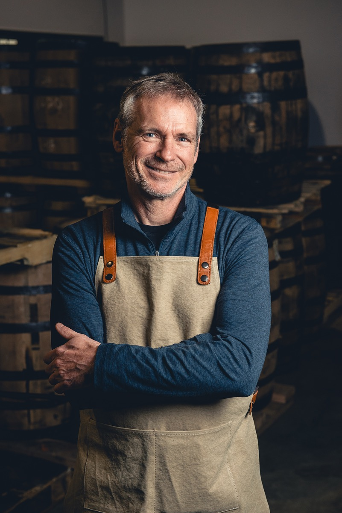
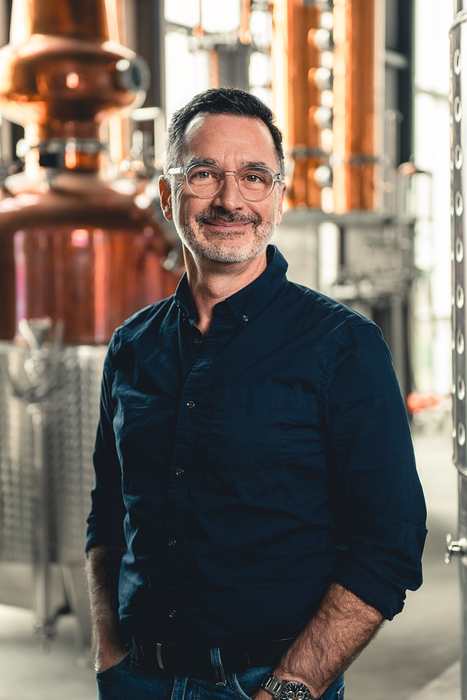

JF
Le créateur
Artiste, pédagogue. Le visage de la marque, celui qui transmet la curiosité du whisky avec un naturel désarmant. « Directement du fût. »
Chapitre 02
À la distillerie WfE, nous croyons aux moments simples : aux conversations qui s'étirent, aux rires autour d'une table, et aux souvenirs qui naissent sans qu'on s'en rende compte.
Nos whiskys sont faits pour ces moments-là. Prenez le temps. Vous êtes ici chez vous.
Derrière le verre

Le créateur
Artiste, pédagogue. Le visage de la marque, celui qui transmet la curiosité du whisky avec un naturel désarmant. « Directement du fût. »

Les arômes
L'approche scientifique et symbolique du goût. Du symbole au parfum, il décrypte ce qui se passe dans le verre. « Quelques gouttes d'eau. »
L'esprit d'accueil
Celle qui fait que tout le monde se sent à sa place — du néophyte au connaisseur. « Sur glace. »
Notre promesse
Ce que nous vous promettons, c'est plus qu'un goût. C'est un whisky forgé par le temps et l'audace.
Pas de compromis. Pas d'artifice. Un whisky fait pour tout le monde, pour le plaisir de se réunir.

Le verre, maintenant
Découvrez les whiskys forgés par notre trio — pensés pour être partagés.